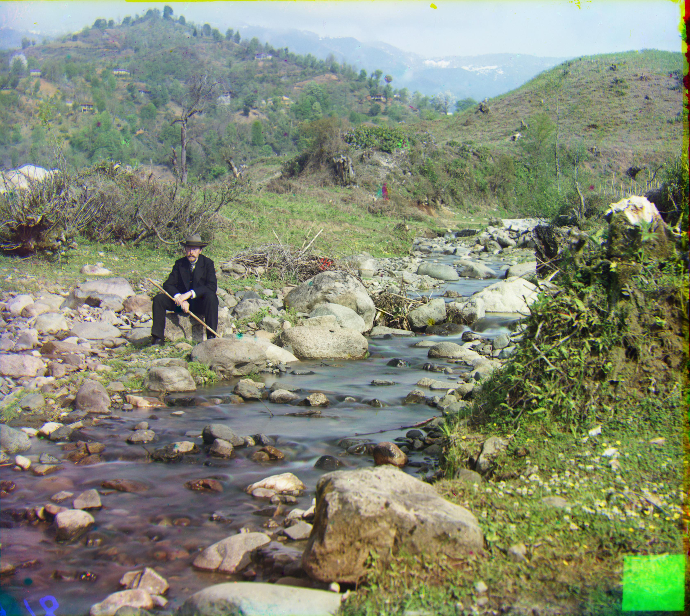
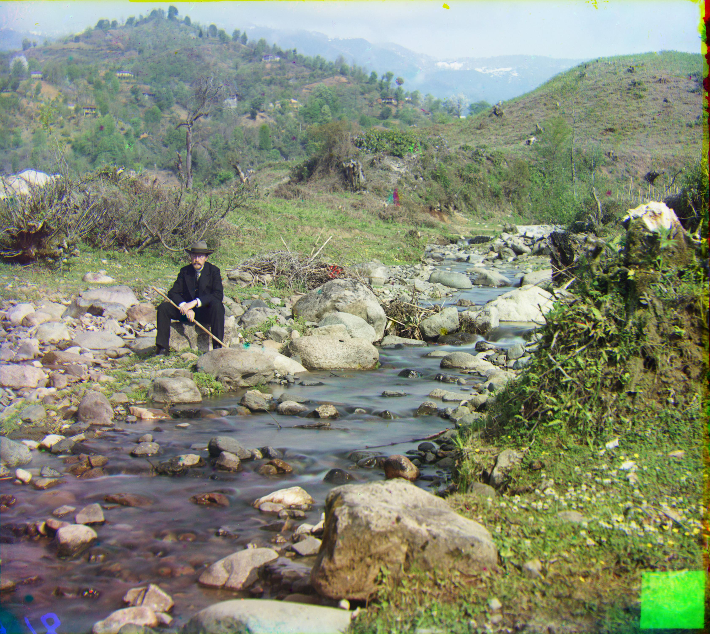

Janise Liang
We want to find a metric that can evaluate how well-aligned the three channels are. Two metrics suggested by course staff are the L2 Norm and the Normalized Cross-Correlation.
* Note that a low L2 score is better, but a high NCC score is better. For consistency, I decided to negate the L2 score in order to make both systems return a higher score on better alignments.
default alignment (no shift)
best L2 alignment

best NCC alignment
A visual comparison indicates that the NCC performed the best, at least for this image. I decided to build a modified NCC metric that could improve on the current one, since we still see artifacts such as the blue tint at the top of the treeline.
The solid black/white edges are not part of the image, so we don't want to score this area. We observe that the edges are around 5% of the image on each side, so we can trim thesse edges before normalization and taking the dot product. However, we still want to keep the edges when doing image operations so that each channel has the same image size, and so we don't lose data.
.
.
.
3238 x 3741
1619 x 1871
810 x 936
The simplest search method is the exhaustive search, which iterates over a set of possible shifts and finds the best-scoring alignment. For the smaller JPG images, a set of shifts of up to 15 in both directions was sufficient to find an ideal alignment.
For the larger .tif images however, we'd have to increase the search range to around 50 to align most images. However, doing an exhaustive search on larger ranges will increase the total number of searches quadratically, which would take a very long time.
To fix this, we use a pyramid search algorithm, which first tries to aligns a version of the image downscaled to around 300 pixels, then recursively align less-downscaled versions. After the first alignment, we only have to search in the [-1, 0, 1] offsets, since the previous iteration covers steps that are multiples of 2.
I aligned the images using the modified NCC metric described above. In addition to the images provided by course staff, I also downloaded additional glass negatives from the original collection on the
Library of Congress website.
Most of the images turned out well! Unfortunately, a few images aren't aligned very well. This is likely due to the fact that one channel may have a very different pattern than another. In the section below, I will use edge detection to create a better matching for such images.
Another observation of note is that the images have visible multicolored edges due to the original edges on the individual channels. I will also investigate this in a future section while attempting to automatically remove the edges.
Some examples of slightly misaligned images:
With some images, one channel was not well-aligned with the other two. In the case of the Emir image, this is likely because the subject's clothing contains very little red, so we cannot just match the brightness of the each channel.
One solution is to align detected edges instead of brightness. This will hopefully match the outline of the subject and maybe the lines in the background, which we can use to align the image more accurately.
I used the Sobel filter from scikit-image to do the edge detection, then ran the pyramid search with the modified NCC, using the detected edges instead of the original image.
Best NCC on pixel brightness
Best NCC on detected edges
After noticing the colorful stripes on the edges of the image, I decided to implement an auto-cropping extension as well. In order to find the edges, I separately applied a horizontal and vertical sobel filter to each channel. In order to find the top and bottom crops, I iterate over around 10% of the top and bottom pixels, and find the line with the most number of pixels above a certain adjustable threshold magnitude.
Many of the images had an outer white border and an inner black strip for the edges, and sometimes white digits on the black strip. I ran the auto-cropping function 3 times to crop the white and black strips, and also . The first crop removes the white border, which is very easy to detect since the pixels go from 1 to near-0. The second crop is a little bit less accurate, since parts of the image may sometimes appear a similar color to the black edge. I used a very conservative threshold, since under-cropping is probably better than over-cropping an image.
Original (No Crop)
First Crop
Second Crop
In this image, we only needed to run the auto-cropping function twice to remove the edges. Ideally, the third run will not do anything, but there may be mistakes if the image contains a lot of vertical or horizontal lines. After experimenting a bit with the thresholds, I found that it was best to use a high threshold for the first crop, and a lower threshold for the second and third.
 

Below are my final images after edge alignment and auto-cropping. The final 4 images were downloaded from the Library of Congress's digitalized collection.
Note: One other extension that I wanted to implement was color neutralizing - trying to decrease the reddish tint in the "Lady" photo, and the blueish tint in "Tobolsk." Unfortunately I did not have the time to complete this part. :(
created with
HTML Creator .